ALCOR TRADING / PERFORMANCE PARTS
BOLT-ON DOWNPIPES.
Explore our range of performance downpipes by vehicle manufacturer.
SHOP BY VEHICLE BRAND
ALCOR TRADING / BMW
BMW BOLT-ON DOWNPIPES.
Explore our range of BMW performance downpipes for selected vehicle models.
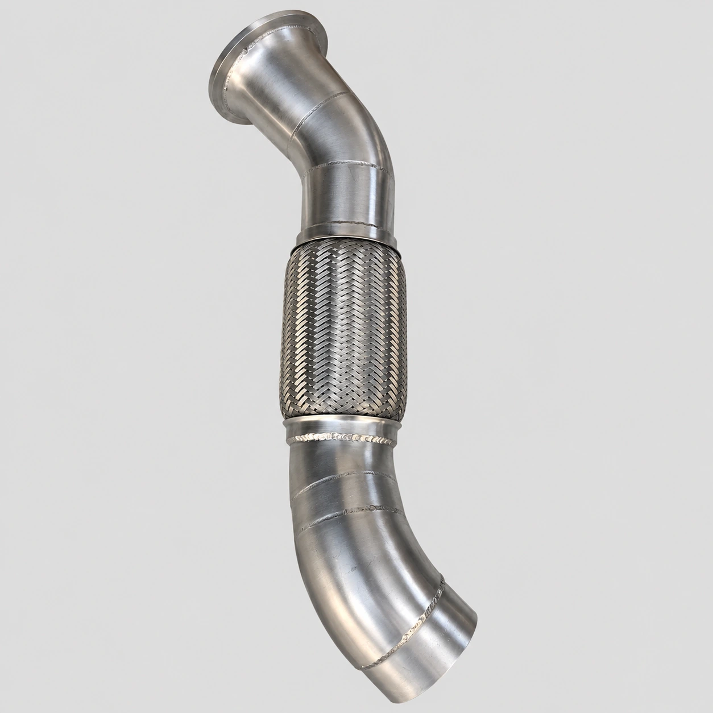
BMW B58 Downpipe
B58 VEHICLE APPLICATIONS
- 1 & 2 Series: M140i, M240i / xDrive
- 3 & 4 Series: 340i, 440i, M340i, M440i
- 5 Series & Z4: 540i, Z4 M40i
- SUVs: X3 M40i, X4 M40i, X5 / X6 / X7 40i
- Toyota: GR Supra A90 / A91
Fitment varies by B58 generation, vehicle model, year and downpipe version. Please confirm compatibility before ordering.
Enquire via WhatsApp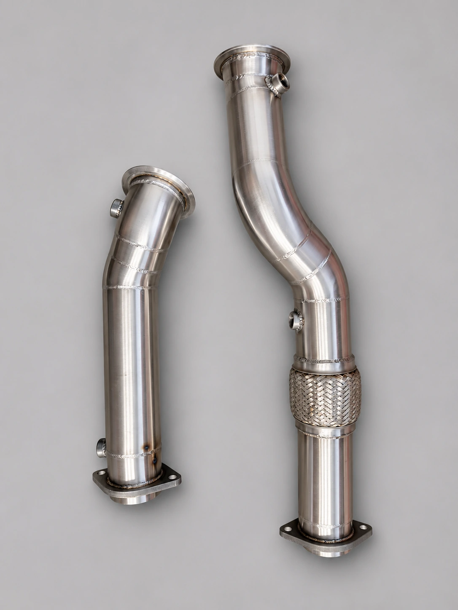
BMW S58 Downpipe
S58 VEHICLE APPLICATIONS
- BMW M2: G87
- BMW M3: G80
- BMW M4: G82 / G83
- BMW X3M: F97
- BMW X4M: F98
Please confirm compatibility with your vehicle model and year before ordering.
Enquire via WhatsApp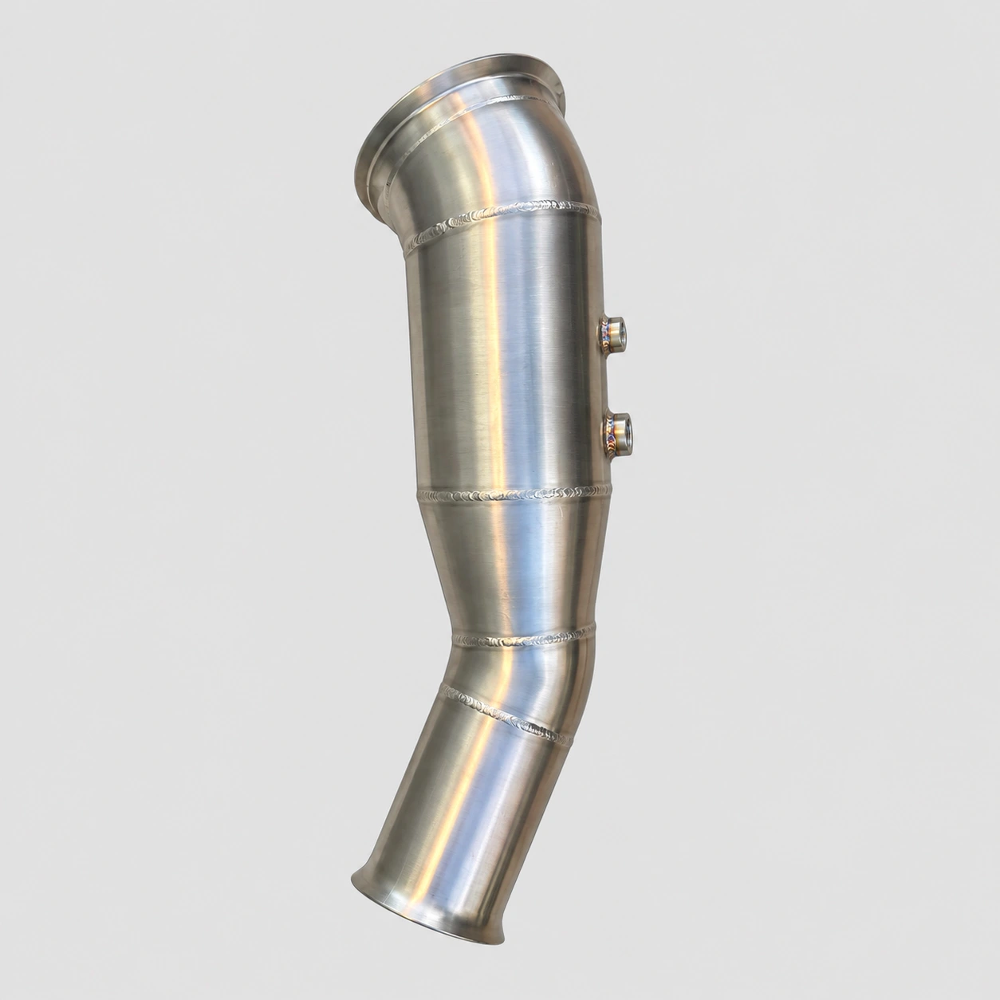
BMW N55 EWG Downpipe
N55 EWG VEHICLE APPLICATIONS
- BMW M135i: EWG
- BMW M235i: EWG
- BMW 335i: EWG
- BMW 435i: EWG
Please confirm compatibility with your vehicle model and year before ordering.
Enquire via WhatsApp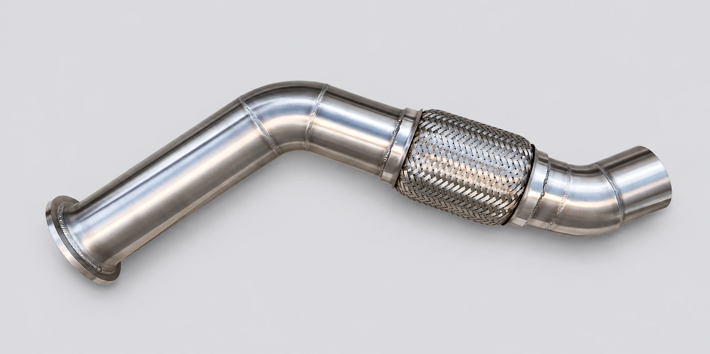
BMW N57 Downpipe
N57 VEHICLE APPLICATIONS
- BMW 330d: F30
- BMW 530d: F10
- BMW X5 30d: F15
Please confirm compatibility with your vehicle model and year before ordering.
Enquire via WhatsApp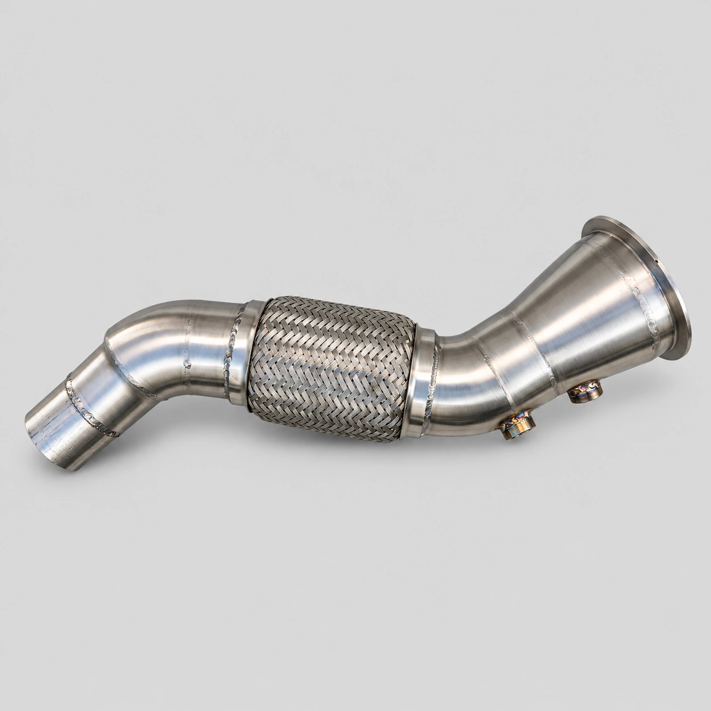
BMW N20 Downpipe
N20 VEHICLE APPLICATIONS
- BMW 1 Series: 120i / 125i (F20 / F21)
- BMW 2 Series: 220i / 228i (F22 / F23)
- BMW 3 Series: 320i / 328i (F30 / F31 / F34)
- BMW 4 Series: 420i / 428i (F32 / F33 / F36)
Compatibility depends on the N20 engine, vehicle model and year. Please confirm fitment before ordering.
Enquire via WhatsApp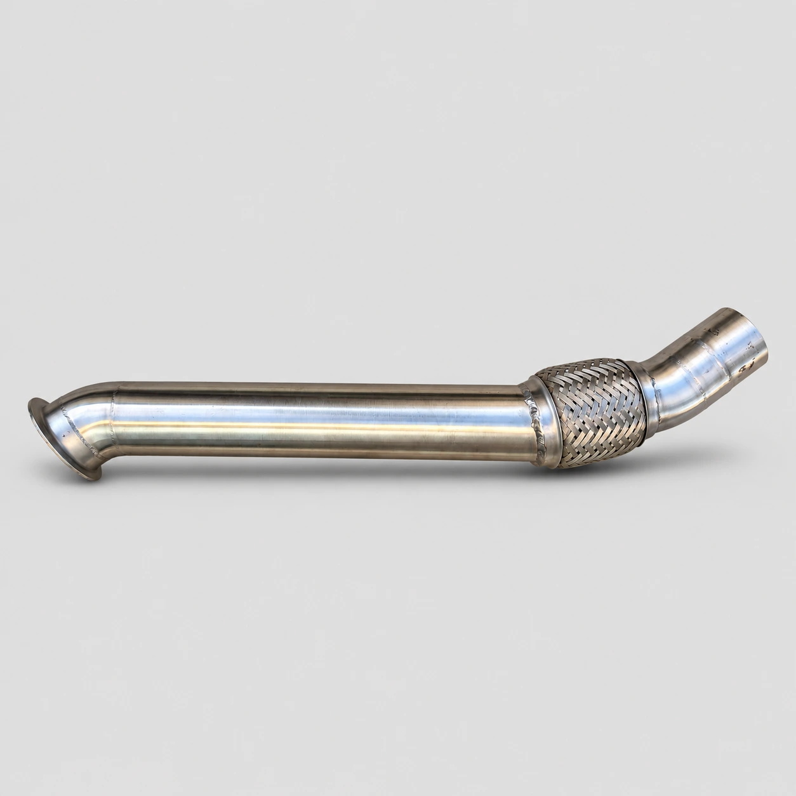
BMW N47 / B47 Downpipe (F SERIES)
N47 / B47 VEHICLE APPLICATIONS
- BMW 1 Series: 120d / 125d (F20 / F21)
- BMW 2 Series: 218d / 220d / 225d (F22 / F23)
- BMW 3 Series: 316d / 318d / 320d / 325d / 328d (F30 / F31 / F34)
- BMW 4 Series: 418d / 420d / 425d (F32 / F33 / F36)
Selected RWD and xDrive applications. Fitment depends on engine version, vehicle model and year. Please confirm compatibility before ordering.
Enquire via WhatsApp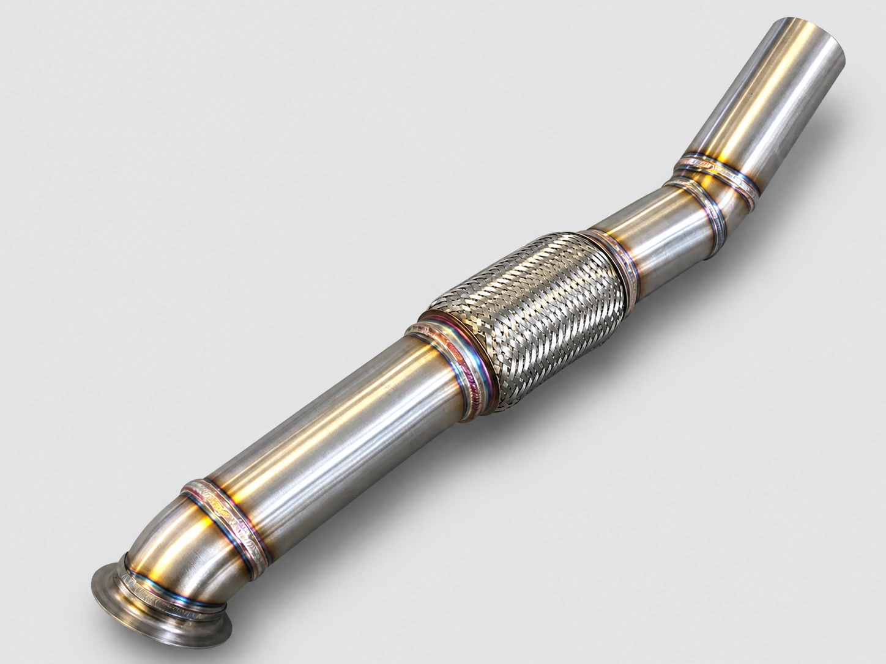
BMW B47 Downpipe (G SERIES)
B47 VEHICLE APPLICATIONS
- 3 Series: G20 / G21 (318d, 320d, 320dx)
- 2 / 4 Series: G42 (220d), G22 / G23 / G26 (420d)
- 5 / 6 Series: G30 / G31 (520d), G32 (620d Gran Turismo)
- SUVs: G01 (X3 20d), G02 (X4 20d)
- SUVs: G05 (X5 20d / 25d), G06 (X6 20d / 25d), G07 (X7 20d)
Please confirm compatibility with your vehicle model and year before ordering.
Enquire via WhatsApp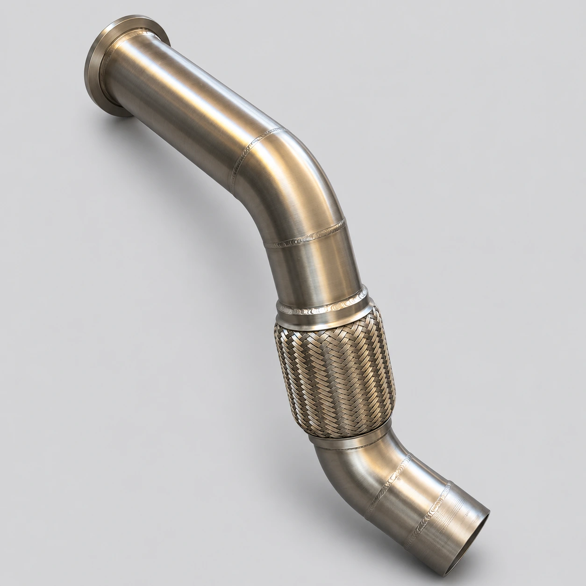
BMW B57 30D Downpipe
B57 30D VEHICLE APPLICATIONS
- BMW 3 Series: 330d (G20)
- BMW 4 Series: 430d (G22)
- BMW 5 Series: 530d (G30)
- BMW X3: X3 30d (G01)
- BMW X5: X5 30d (G05)
Selected G-Series BMW 30d applications. Please confirm engine configuration, vehicle model and year before ordering.
Enquire via WhatsApp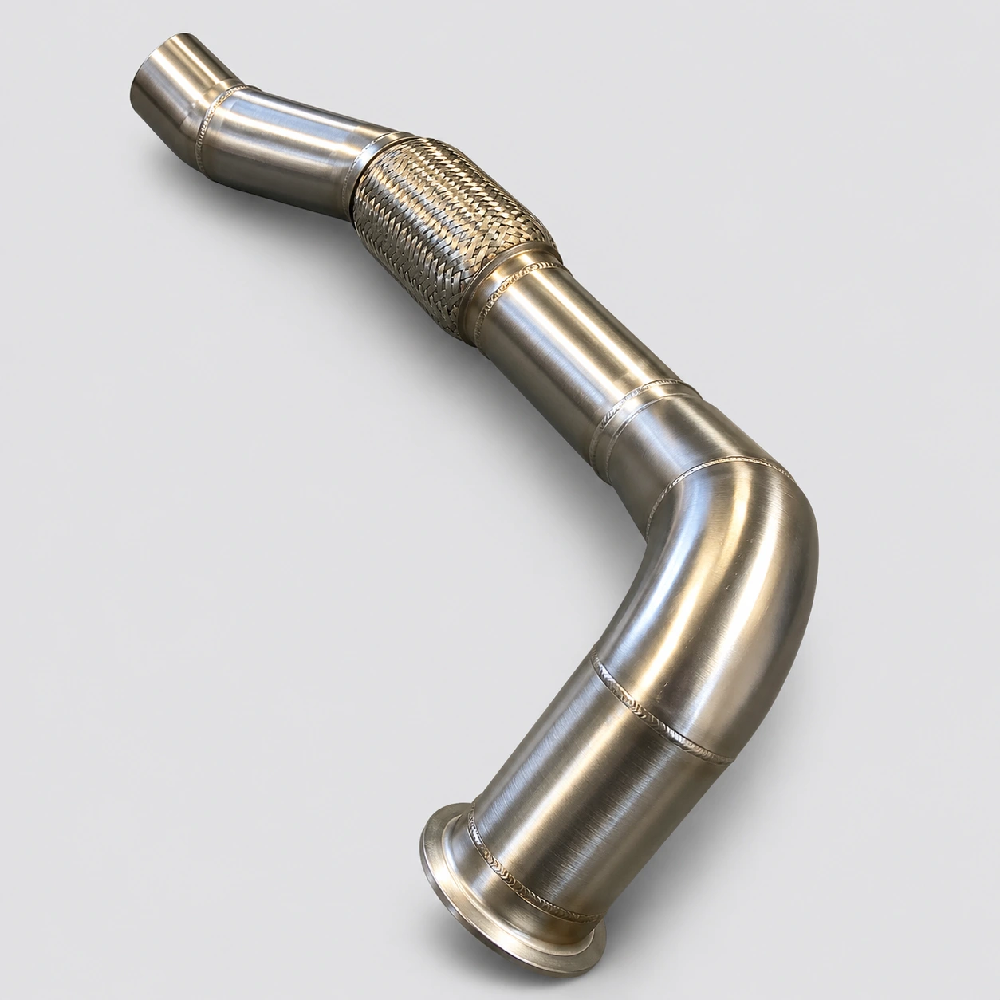
BMW X1 F48 2.0D B47 Downpipe
B47 VEHICLE APPLICATIONS
- BMW X1: F48 2.0D B47
- BMW X2: B47
- BMW 2 Series Active Tourer: 220d B47
Listed for selected South African non-DPF variants. Please confirm engine configuration, vehicle model and year before ordering.
Enquire via WhatsApp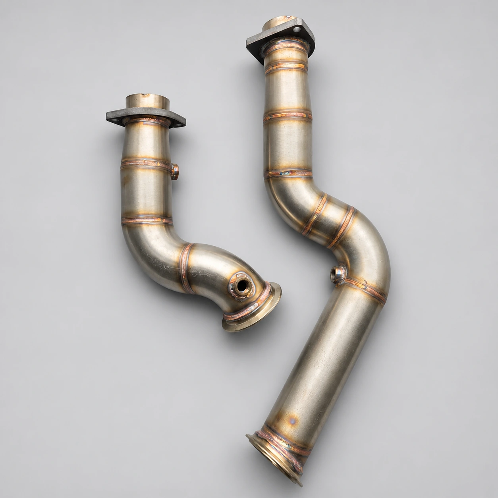
BMW S55 Downpipe
S55 VEHICLE APPLICATIONS
- BMW M2 Competition: F87
- BMW M2 CS: F87
- BMW M3: F80
- BMW M4: F82 / F83
Please confirm compatibility with your vehicle model, year and engine configuration before ordering.
Enquire via WhatsApp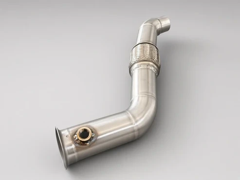
BMW M47 Downpipe
M47 VEHICLE APPLICATIONS
- BMW 118d: E81 / E82 / E87 / E88
- BMW 120d: E81 / E82 / E87 / E88
- BMW 318d: E90 / E91 / E92 / E93
- BMW 320d: E90 / E91 / E92 / E93
Please confirm M47 engine configuration, vehicle model and year before ordering.
Enquire via WhatsAppVW Bolt-on Downpipes
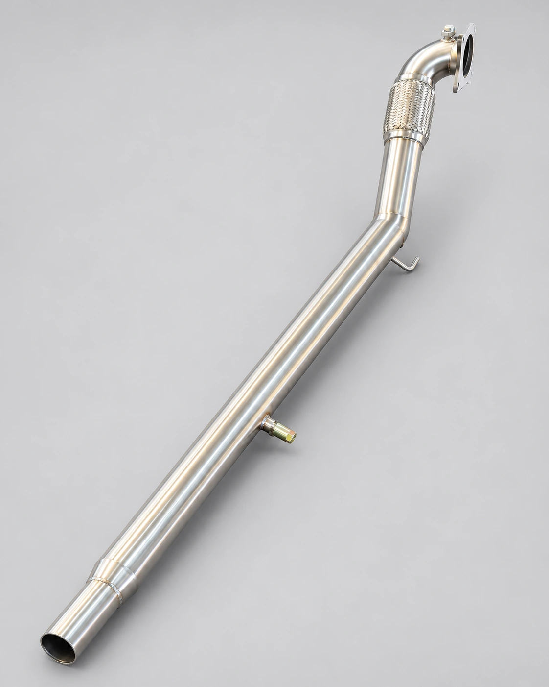
VW Golf 6 GTI Downpipe
VEHICLE APPLICATIONS
- VW Golf 6 GTI: 2.0T
- VW Golf 5 GTI: 2.0T
- Audi A3: 2.0T
Please confirm engine configuration, vehicle model and year before ordering.
Enquire via WhatsApp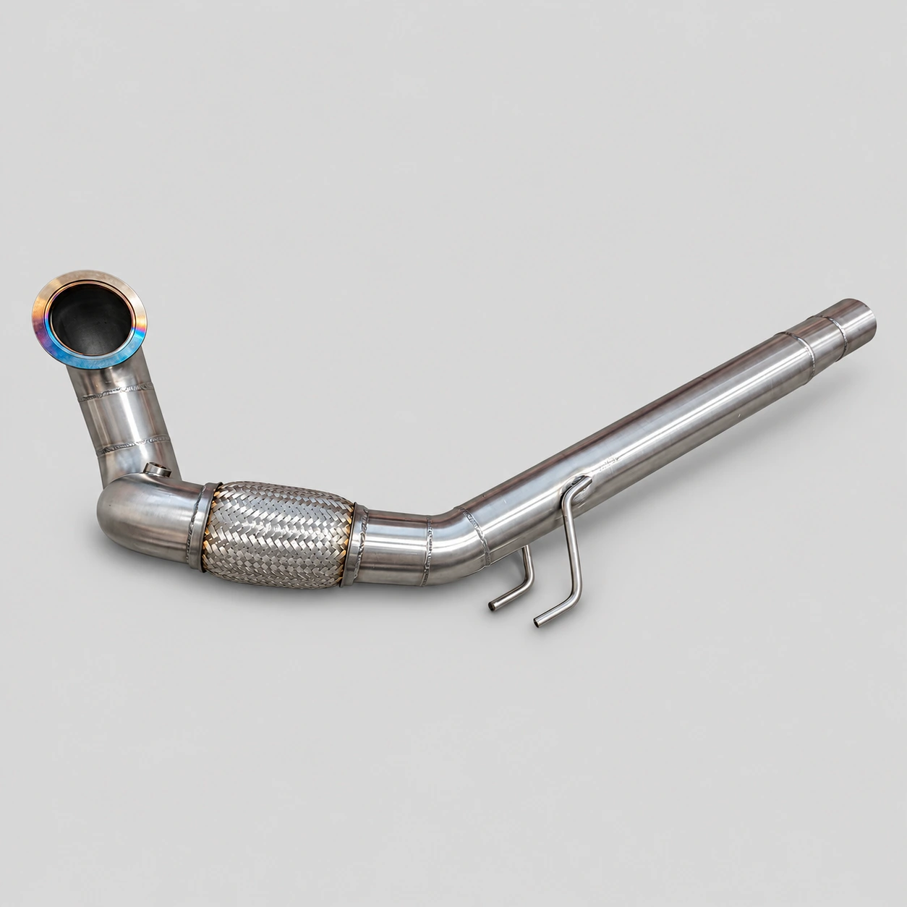
VW Golf 7 GTI Downpipe
VEHICLE APPLICATIONS
- VW Golf 7 GTI: 2.0 TSI
- VW Golf 7.5 GTI: 2.0 TSI
- VW Golf 7 GTI CLUBSPORT: 2.0 TSI
- VW Golf 7.5 GTI TCR: 2.0 TSI
- Audi A3 8V: 2.0 TFSI FWD
- Audi TT 8S: 2.0 TFSI FWD
Please confirm engine configuration, vehicle model and year before ordering.
Enquire via WhatsApp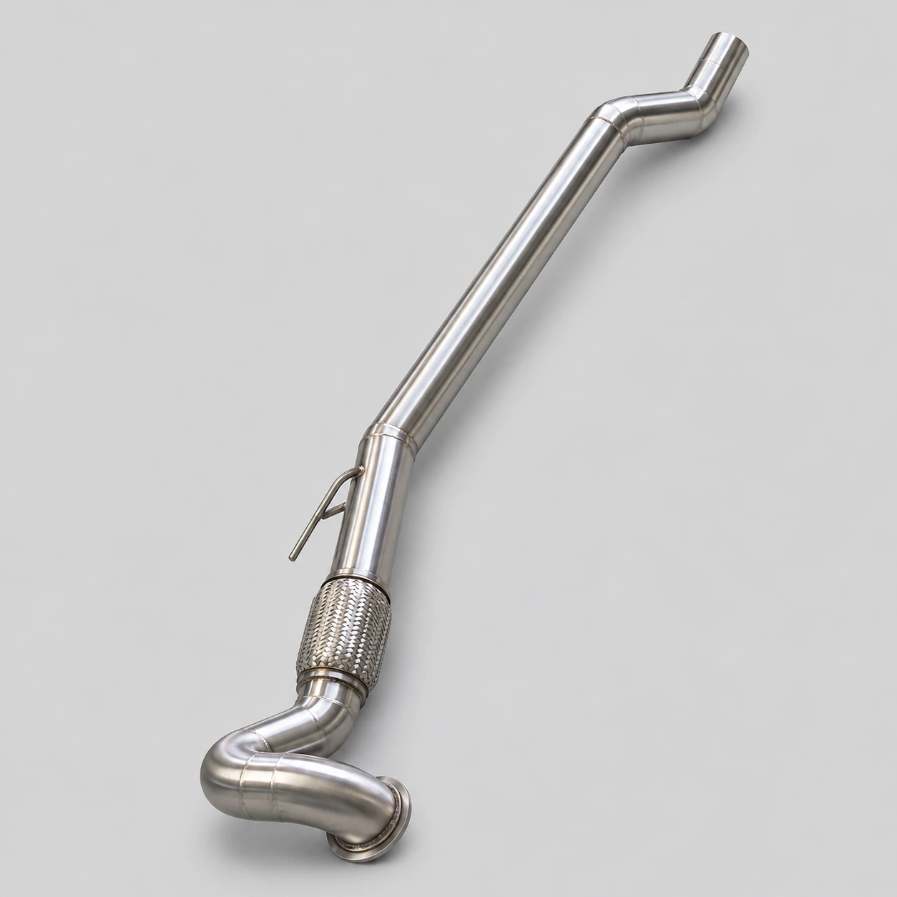
VW Golf 7R Downpipe
VEHICLE APPLICATIONS
- VW Golf 7R: 2.0 TSI
- VW Golf 7.5 R: 2.0 TSI
- Audi S3 8V: 2.0 TFSI Quattro
Please confirm engine configuration, vehicle model and year before ordering.
Enquire via WhatsApp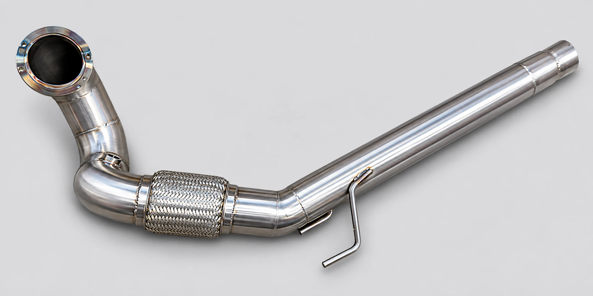
VW Golf 8 GTI Downpipe
VEHICLE APPLICATIONS
- VW Golf 8 GTI: 2.0 TSI
- VW Golf 8.5 GTI: 2.0 TSI
- Audi A3 8Y 40 : 2.0 TFSI
- Audi TT 8S (LATER EVO4 MODELS) : 2.0 TFSI
Please confirm engine configuration, vehicle model and year before ordering.
Enquire via WhatsApp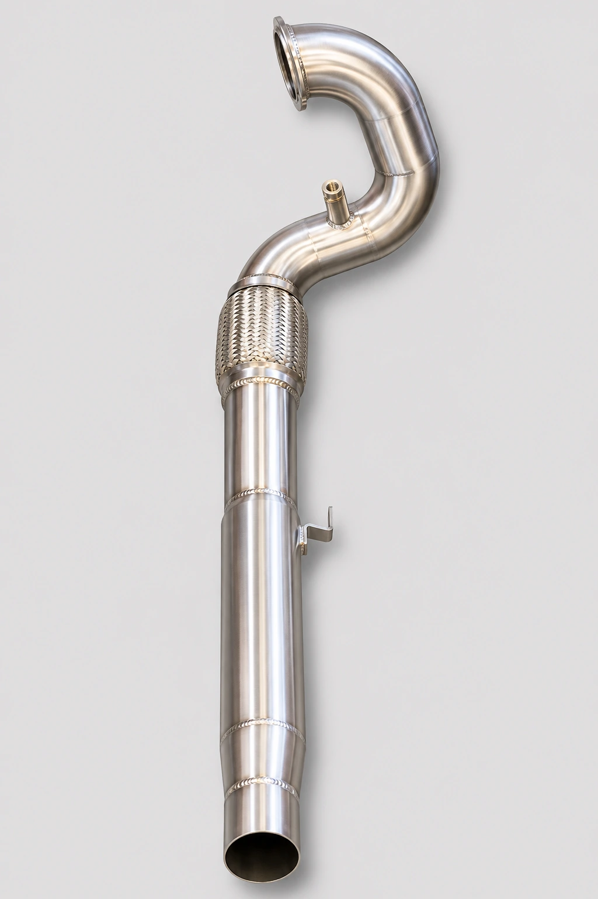
VW AW Polo GTI Downpipe
VEHICLE APPLICATIONS
- VW Polo AW GTI: 2.0 TSI
Designed for the VW Polo AW GTI. Please confirm vehicle year and engine configuration before ordering.
Enquire via WhatsAppAudi Bolt-on Downpipes
Audi S3 Downpipe
VEHICLE APPLICATIONS
- Audi S3 8V: 2.0 TFSI Quattro
- VW Golf 7R: 2.0 TSI
- VW Golf 7.5 R: 2.0 TSI
Please confirm engine configuration, vehicle model and year before ordering.
Enquire via WhatsAppAudi TTS Downpipe
VEHICLE APPLICATIONS
- Audi TTS 8S: 2.0 TFSI Quattro
- Audi S3 8V: 2.0 TFSI Quattro
- VW Golf 7R: 2.0 TSI
- VW Golf 7.5 R: 2.0 TSI
Please confirm engine configuration, vehicle model and year before ordering.
Enquire via WhatsAppFord Bolt-on Downpipes
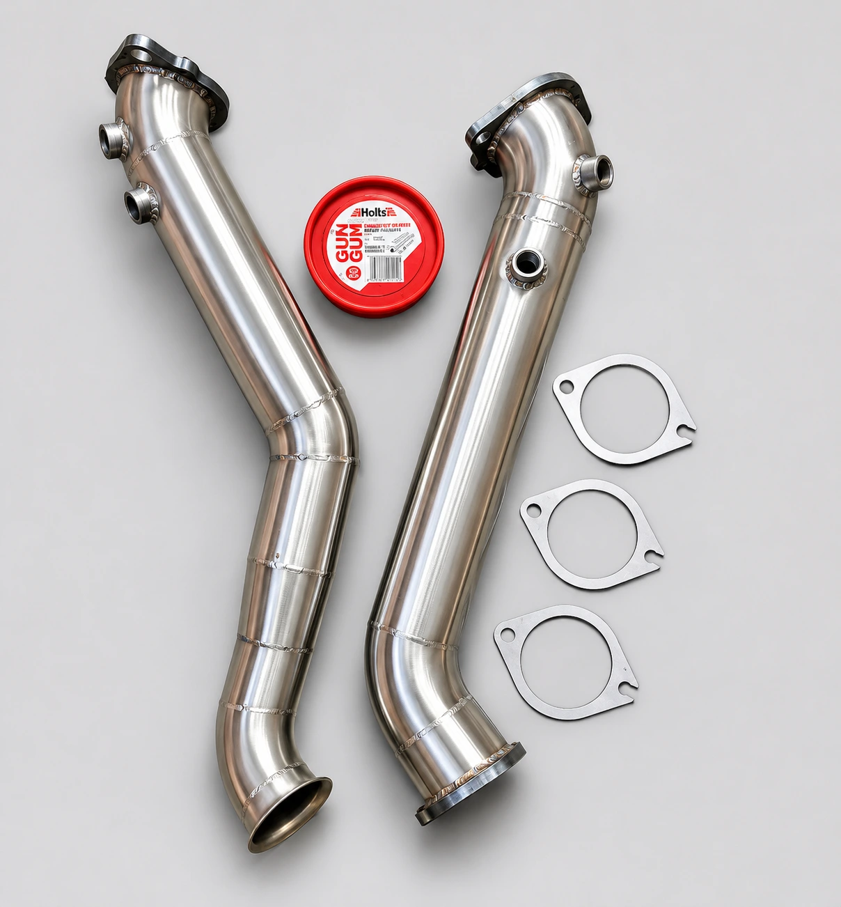
Ford Ranger Raptor New Gen Downpipe
VEHICLE APPLICATIONS
- Ford Ranger Raptor Next-Gen (2023): 3.0L V6 Twin-Turbo Petrol
- Ford Ranger Raptor Next-Gen (2024): 3.0L V6 Twin-Turbo Petrol
- Ford Ranger Raptor Next-Gen (2025): 3.0L V6 Twin-Turbo Petrol
- Ford Ranger Raptor Next-Gen (2026): 3.0L V6 Twin-Turbo Petrol
Please confirm vehicle model, year and engine configuration before ordering.
Enquire via WhatsApp